ฟิสิกส์ • เล่ม 2 • บทที่ 4 สมดุลกล
4.2 ศูนย์กลางมวลและศูนย์ถ่วง
สังเกตจากสองการทดลอง แล้วเชื่อมแนวแรง การหมุน และตำแหน่งจุดสำคัญของวัตถุ
ใช้ภาพเป็นข้อมูล บันทึกข้อสังเกตและความรู้ใต้แต่ละหัวข้อ แล้วตอบคำถามในพื้นที่ของข้อนั้น
1 ทดลองดันหนังสือ: แนวแรงกับการเคลื่อนที่
วัตถุจริงมีขนาดและรูปร่าง การออกแรงจึงอาจทำให้วัตถุเลื่อนที่และหมุนได้ เราจะเปลี่ยนแนวดัน แล้วเปรียบเทียบผล
เริ่มต้นทดลอง
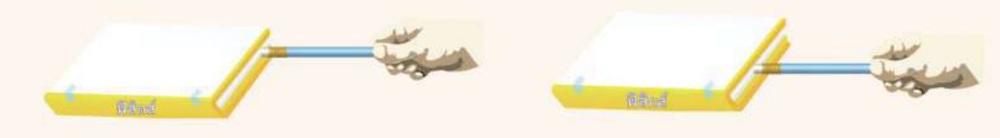
วางหนังสือให้อยู่นิ่งบนโต๊ะราบลื่น ดันในแนวต่าง ๆ โดยพยายามใช้แรงขนาดใกล้เคียงกัน สังเกตทั้งตำแหน่งและการเปลี่ยนทิศของปกหนังสือ
ผลการทดลอง: เปรียบเทียบก่อนและหลังดัน
ภาพมองจากด้านบนของหนังสือเล่มเดียวกัน ลูกศร F แทนแรงดัน เส้นประสีฟ้าแสดงแนวแรง และกรอบประสีเทาในภาพหลังแสดงตำแหน่งเดิม ภาพแสดงลักษณะการเคลื่อนที่ ไม่ใช้คำนวณระยะหรือมุม
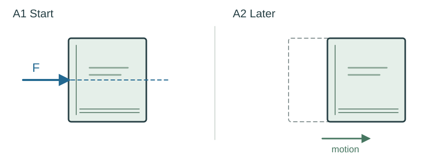
กรณี A ตำแหน่งและทิศของปกหนังสือเปลี่ยนอย่างไร?
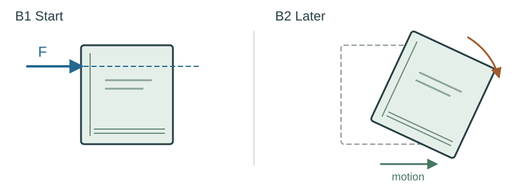
กรณี B ต่างจากกรณี A อย่างไร?
ทดลองซ้ำจากหลายด้าน
เลือกเฉพาะการดันที่ทำให้หนังสือเลื่อนโดยไม่หมุน ขีดแนวดินสอบนกระดาษ แล้วเปลี่ยนด้านที่ดัน เส้น 1–3 ในภาพเป็นแนวที่ได้จากการทดลองคนละครั้ง
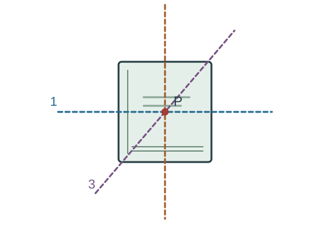
เส้น 1–3 มีความสัมพันธ์กันอย่างไร และจุด P มีลักษณะพิเศษอะไร?
สรุปผลการทดลองดันหนังสือ
ศูนย์กลางมวล (CM)
แนวแรงผ่าน CM กับจุดที่สัมผัสวัตถุ
ใช้ความเข้าใจจากการทดลอง
1. ต้องดันในแนวใดให้หนังสือที่เริ่มอยู่นิ่งเลื่อนโดยไม่หมุน?
2. ถ้าแนวดันจากหลายด้านทำให้หนังสือไม่หมุน จุดตัดของแนวเหล่านั้นบอกอะไร?
3. รูปร่างสมมาตรอย่างเดียว เพียงพอจะสรุปว่า CM อยู่ตรงกลางรูปหรือไม่? เพราะเหตุใด?
4. ติดดินน้ำมันเพิ่มใกล้ปลายขวาของไม้บรรทัดสม่ำเสมอ CM ของระบบจะเลื่อนไปทางใด?
5. ดันที่ขอบหนังสือ ทำไมจึงเลื่อนโดยไม่หมุนได้ ทั้งที่จุดดันไม่ได้อยู่ที่ CM?
6. หนังสือเลื่อนโดยไม่หมุน แปลว่าอยู่ในสมดุลกลเสมอหรือไม่? ต้องรู้อะไรเพิ่ม?
2 ทดลองแขวนแผ่นวัตถุ: หาศูนย์ถ่วง
เริ่มต้นทดลอง
ใช้แผ่นวัสดุแข็งบางรูปร่างไม่สมมาตร เจาะรูใกล้ขอบ 3 ตำแหน่ง แขวนให้หมุนได้อย่างอิสระ และแขวนลูกดิ่งจากจุดเดียวกัน
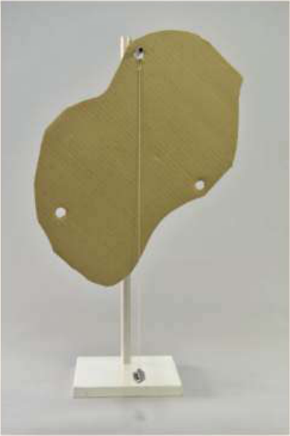
รอให้แผ่นวัตถุและลูกดิ่งหยุดนิ่ง ลากเส้นตามแนวเชือกบนแผ่น แล้วเปลี่ยนรูแขวน ทำซ้ำจนครบ โดยใช้แผ่นเดิมและไม่เปลี่ยนการกระจายมวล
ผลการทดลอง: แผ่นเดิม เปลี่ยนจุดแขวน
ภาพ A–C ใช้แผ่นสม่ำเสมอรูปเดิมและรูเดิมทุกภาพ เส้นแต่ละสีเป็นรอยจากการแขวนแต่ละครั้ง ภาพ D วางแผ่นกลับในท่าเดิมเพื่อเปรียบเทียบเส้นทั้งหมด
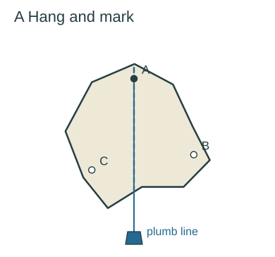
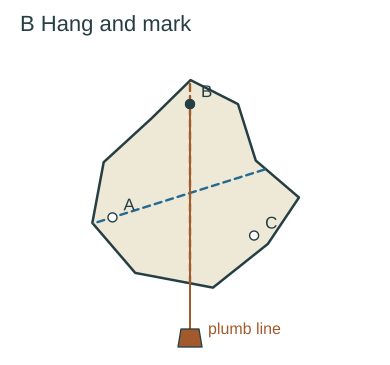
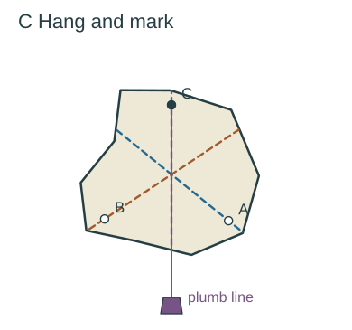
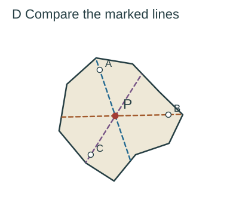
เมื่อเปลี่ยนรูแขวนแล้ว เส้นที่ลากจากแต่ละครั้งตัดกันอย่างไร?
ติดตามตำแหน่ง P จากภาพ D กลับไปยังภาพ A–C ขณะแผ่นหยุดนิ่ง P อยู่ในแนวใดเมื่อเทียบกับจุดแขวน?
สรุปผลการทดลองแขวนแผ่นวัตถุ
ศูนย์ถ่วง (CG)
ใช้ความเข้าใจจากการทดลอง
1. เมื่อแขวนจนหยุดนิ่ง CG อยู่ตำแหน่งใดเมื่อเทียบกับจุดแขวน?
2. แขวนเพียงครั้งเดียว ระบุ CG เป็นจุดได้หรือยัง? รู้อะไรแล้วบ้าง?
3. สองแนวตัดกันแล้ว การแขวนจากรูที่สามช่วยอะไร?
4. CG จำเป็นต้องอยู่ในเนื้อวัตถุหรือไม่? ยกตัวอย่างหนึ่งชนิด
5. เปลี่ยนรูแขวนแล้วแผ่นเปลี่ยนท่า CG ย้ายตำแหน่งเมื่อเทียบกับตัวแผ่นหรือไม่?
3 เชื่อมศูนย์กลางมวลกับศูนย์ถ่วง
CM และ CG อยู่ตำแหน่งเดียวกันเมื่อใด?
ตำแหน่ง CM กับการกระจายมวล
หาตำแหน่งจากสมมาตร: ต้องระบุว่ามวลสม่ำเสมอ
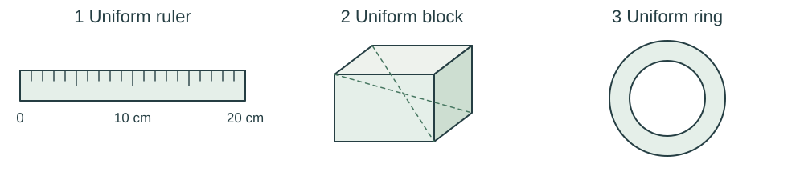
ไม้บรรทัดสม่ำเสมอ ยาว 20 cm
แท่งทรงสี่เหลี่ยมมุมฉากเนื้อสม่ำเสมอ
วงแหวนสม่ำเสมอ
4 คำถามตรวจสอบความเข้าใจ 4.2
คำถาม 4 ข้อตามหนังสือเรียน สสวท. ใช้ข้อสรุปและเงื่อนไขจากสองการทดลองประกอบเหตุผล
1. วัตถุมวลสม่ำเสมอวางบนพื้นโลก ศูนย์ถ่วงกับศูนย์กลางมวลจะเป็นตำแหน่งเดียวกันหรือไม่?
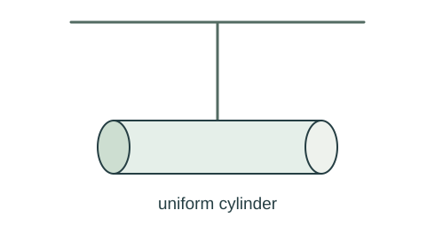
2. แขวนวัตถุทรงกระบอกที่ปลายเชือกด้านหนึ่ง ปลายเชือกอีกปลายหนึ่งแขวนไว้กับเพดาน จะต้องแขวนวัตถุทรงกระบอกอย่างไรให้วัตถุนั้นวางตัวในแนวระดับพอดี?
3. ศูนย์กลางมวลและศูนย์ถ่วงของวัตถุหนึ่งบนผิวโลกอยู่ที่ตำแหน่งเดียวกัน ถ้าวัตถุนี้อยู่บนดวงจันทร์ ศูนย์กลางมวลและศูนย์ถ่วงของวัตถุก้อนนี้จะเปลี่ยนแปลงหรือไม่ อย่างไร?
4. ยกตัวอย่างวัตถุที่ศูนย์ถ่วงอยู่ภายนอกเนื้อวัตถุมา 2 ตัวอย่าง
Physics • Book 2 • Chapter 4 Mechanical equilibrium
4.2 Centre of mass and centre of gravity
Use two experiments to connect lines of action, rotation, and special points in an object.
Use the figures as evidence. Complete the notes under each heading, then answer each question in its own space.
1 Pushing a book: line of action and motion
Real objects have size and shape. A force may produce both translation and rotation. Change the line of the push and compare the outcomes.
Starting the experiment
Start with the book at rest on a smooth horizontal table. Apply similar pushes along different lines. Observe both its position and the orientation of its cover.
Results: compare before and after the push
Top views of the same book. F is the push; blue dashed lines show its line of action. Grey outlines in the later views mark the original position. The motion is qualitative, not drawn for measuring distances or angles.
In case A, how do the position and orientation of the book change?
How does case B differ from case A?
Repeat from several edges
Keep only the pushes that produce translation without rotation. Mark each pencil direction on the paper and repeat from other edges. Lines 1–3 are marks from separate trials.
How are lines 1–3 related, and what is special about point P?
Conclusion from the book experiment
Centre of mass (CM)
Line through CM versus point of contact
Use what the experiment shows
1. Along which line should you push an initially stationary book to make it translate without rotating?
2. If pushes from several edges cause no rotation, what does the intersection of their lines identify?
3. Is a symmetric shape alone enough to place CM at its geometric centre? Why?
4. Add modelling clay near the right end of a uniform ruler. In which direction does the CM of the combined system shift?
5. How can a push at the edge produce no rotation even though the contact point is not at CM?
6. Does translation without rotation always mean mechanical equilibrium? What else must you know?
2 Suspending a lamina: locating centre of gravity
Starting the experiment
Use a thin, rigid, irregularly shaped sheet with three holes near its edge. Suspend it so it can turn freely, and hang a plumb line from the same support point.
Wait until the sheet and plumb line are still. Mark the string direction on the sheet, change the suspension hole, and repeat. Keep the same sheet and mass distribution throughout.
Results: same sheet, different suspension points
A–C use the same uniform sheet and the same holes. Each colour marks a different suspension trial. D returns the sheet to its original orientation to compare all the marks.
After changing the suspension hole, how do the marked lines intersect?
Track point P from D back to A–C. When the sheet is at rest, where is P relative to the suspension point?
Conclusion from the suspension experiment
Centre of gravity (CG)
Use what the experiment shows
1. Where is CG relative to the support when the freely suspended sheet is at rest?
2. Can one suspension trial locate CG as a unique point? What does it tell you?
3. After two marked lines intersect, what does suspension from the third hole add?
4. Must CG lie within the material of an object? Give one example.
5. When a different hole changes the orientation of the sheet, does CG move relative to the sheet itself?
3 Connect centre of mass and centre of gravity
When do CM and CG coincide?
CM and mass distribution
Locating the centre by symmetry: uniform mass is required
Uniform ruler, length 20 cm
Uniform rectangular block
Uniform ring
4 IPST understanding check 4.2
The four textbook questions. Use the conclusions and conditions from both experiments to justify your answers.
1. For an object of uniform mass distribution on Earth’s surface, are CG and CM at the same position?
2. A cylinder is suspended from a rope attached to the ceiling. How should the cylinder be supported so that it rests horizontally?
3. An object’s CM and CG coincide on Earth’s surface. If it is taken to the Moon, do the positions of CM and CG change? Explain.
4. Give two examples of objects whose CG lies outside their material.